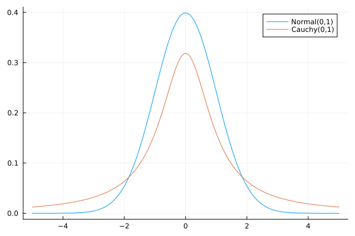

Posterior probability: How to implement
Consider the data and model from Simple-example:
X = collect(1:10)
Y = [1.0, 1.78, 3.64, 3.72, 5.33, 2.73, 7.52, 9.19, 6.73, 8.95]
ΔY = [0.38, 0.86, 0.29, 0.45, 0.66, 2.46, 0.39, 0.45, 1.62, 1.54]
data = FittingData(X,Y,ΔY)
model = ModelFunctions((x,λ)-> λ*x)Likelihood functions
Observer that no distributions were specified in the constructor for data above. As explained in FittingData, the constructor then defaults to normal distributions. The likelihood function that corresponds to the weighted least squares objective (see Retrieving the LSQ objective) can thus be obtained by
lsq_likelihood = posterior_objective(data,model)#25 (generic function with 1 method)Like lsq_objective, posterior_objective returns a function that takes the model parameters λ as argument.
Normal distributions are not the only possible $y$-uncertainty distributions ($q_i(y_i \mid m(x_i,\lambda))$). For example, one might assume a heavy-tailed distribution for measurements, e.g. a Cauchy distribution:
To modify the $y$-uncertainty distributions, the FittingData object must be redefined (see FittingData). The distributions must have the signature (y,m,Δy):
cauchy(y,m,Δy) = pdf(Cauchy(m,Δy),y)
data_cauchy = FittingData(X,Y,ΔY,distributions = cauchy)Now a likelihood function with Cauchy uncertainty distributions can be created:
cauchy_likelihood = posterior_objective(data_cauchy,model)#25 (generic function with 1 method)To compare the shape of the resulting likelihood functions, it is helpful to scale up the cauchy_likelihood, such that the maxima have the same height:
It is possible to define a likelihood distribution for each data point. Furthermore, these functions can be general julia functions, i.e. while the input arguments must be (y,m,Δy), they need not be utilized in the function.
For example, we can assign normal distributions with σ=1 for the first 5 data points, and Cauchy distributions width $\sigma_i = \Delta y_i$ for the remaining data points:
normal_dists = [(y,m,Δy)-> pdf(Normal(m,1),y) for i in 1:5]
cauchy_dists = [(y,m,Δy)-> pdf(Cauchy(m,Δy),y) for i in 6:length(Y)]
data_example = FittingData(X,Y,ΔY, distributions = vcat(normal_dists...,cauchy_dists...))
likelihood = posterior_objective(data_example,model)One application for this flexibility is to use the marginalization formula for the likelihood form section Independent-data-points
Using priors
As described in the remark about the objectivity of priors, one always retrieves the likelihood function, when using a uniform prior (over the range of computer representable numbers). This is in fact what happened in the examples Likelihood-functions, as the full constructor for posterior objectives has an optional argument:
posterior_objective(data::FittingData,model::ModelFunction,prior::Function= λ -> 1)This means, whenever only the two arguments data and model are used, the last argument defaults to λ-> 1. To specify a certain prior, one just needs to pass it as third argument.
For example, the theory and/or other measurements could indicate that the true parameter value should be $\lambda = 1$. To implement a normal distribution with $\mu =1$ and $\sigma = 0.1$ as prior, the third argument must be the pdf function for said normal distribution (here using the build in pdf function from Distributions.jl):
posterior = posterior_objective(data,model,λ-> pdf(Normal(1,0.1),λ))#25 (generic function with 1 method)Again, since the posterior and the likelihood are not properly normalized, rescaling is necessary to compare the shapes of lsq_likelihood and posterior: